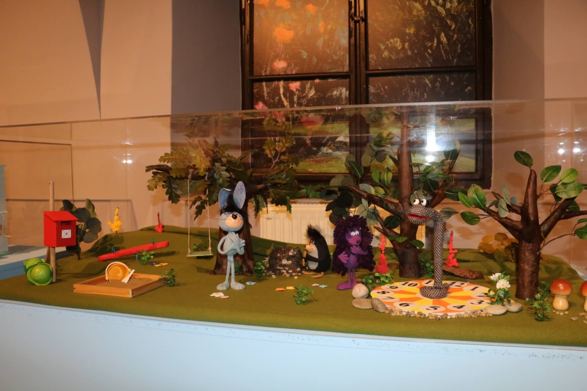
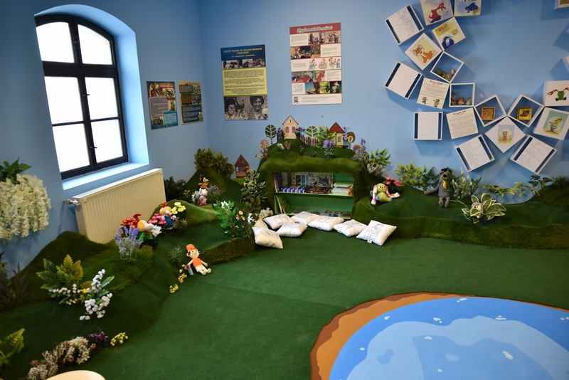
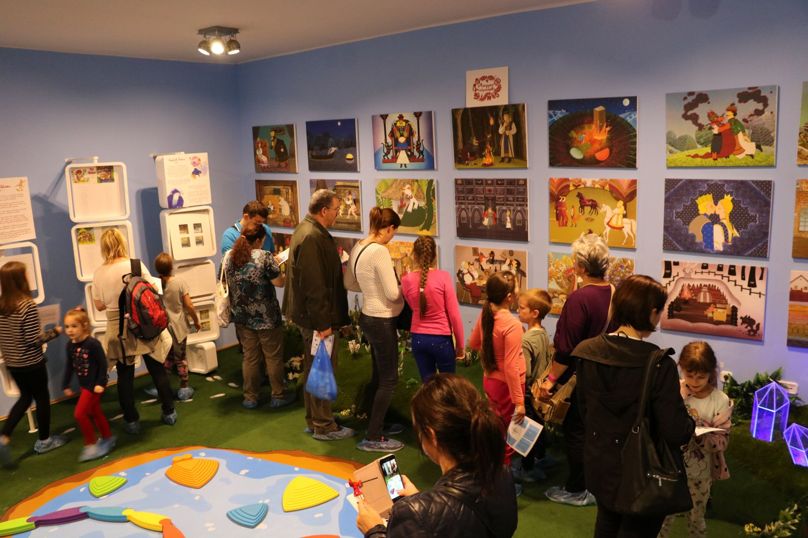

Mesés (B)irodalom
Időszaki kiállítás
Hogyan lehet (újra) felszabadult gyermek, aki belép egy „rideg” és „statikus” közintézmény légkörébe, egy múzeumi kiállítótérbe, amiről óvoda óta hallgatjuk az óvásokat: „Ne hangoskodj! Ne szaladgálj! Ne nyúlj semmihez! Figyelj! Légy csendben! Viselkedj!” Hogyan tudjuk feloldani ezeket a berögzült tiltásokat? Hogyan tudjuk ilyen feltételek mellett játszva tanítani a gyerekeket, közel hozni hozzá és saját nyelvére formálni a kiállítás által közvetített ismereteket?
Először is, kedves látogató, kérlek, vedd le a cipőd, és lépj be a Mesetisztásra, majd az Óperenciás-tenger és az Üveghegyek alatt heveredj le a fűre, Mirr-Murr és Kukori között talán találsz egy kényelmes buckát. Nézegetheted a falon a virágszirmokat, mindegyik más-más történetet mond el a TV Maciról, A kockásfülű nyúlról, Frakkról, Vukról, vagy, ha kedved tartja, választhatsz egy mesekönyvet a földalatti üreg polcairól. Ám, ha ehhez sincs kedélyed, akkor azzal kell beérned, hogy én mesélek el neked egy történetet…
Egyszer volt, hol nem volt a Debreceni Irodalom Házában egy Mesés (B)irodalom című időszaki kiállítás, mely a magyar meseirodalom tájára kalauzolta a látogatókat. Bemutatta a magyar népmesék világát, Benedek Elek és Arany László munkásságát, emellett játékos nosztalgiával hívta életre a ’60-as, ’70-es években útnak induló úgynevezett „retró” mesék hőseit. A látogató találkozhatott Mazsolával, Kukorival és Kotkodával, a TV Macival, tanúja lehetett Frakk, Mirr-Murr, A legkisebb ugrifüles, Süsü, A kockásfülű nyúl, Pom Pom, Vuk, Ludas Matyi, Misi Mókus, A Nagy Ho-ho-ho-horgász és még sok-sok mesehős kalandjainak. Továbbá megismerhette a magyar meseirodalom olyan feledhetetlen alakjainak munkásságát, mint például Csukás István, Marék Veronika, Bálint Ágnes, Dargay Attila, Henrik Irén és Sajdik Ferenc.
Már 2017-ben felmerült az ötlet, hogy egy olyan tárlatot kellene éltre hívni, mely a legfiatalabb korosztályt is meg tudja szólítani, sőt akár a kétéves gyermekeket is huzamosabb ideig aktívan le tudja kötni a kiállítótérben.
A kiállítás fókuszpontjába a mese tematikája került, ugyanis a mesei szövegeken keresztül lép először kapcsolatba a gyermek a szépirodalommal, ugyanakkor a mesélés folyamata egy mély, személyes kapocs is a gyermek és a szülő, nagyszülő között. Ennek nyomán esett választásunk az úgynevezett retró mesék bemutatására, mely által a szülők, nagyszülők számára is előhívhattunk egy nosztalgikus élményt, előidézve akár három generáció gyermekkori emlékeinek találkozását.
A Mesés (B)irodalom kiállítás azt a történetet szerette volna elmesélni, hogyan indult el a televízióban Bálint Ágnes kezdeményezésére az Esti mese sorozata, hogyan hívták életre a TV Maci figuráját Foky Ottó tervei alapján Pintér Maja és társai, hogyan készültek az első magyar bábfilmsorozatok, rajzfilmek, és legfőképp milyen mesei szövegek adták a történetek forrását. A kiállítás Csukás István meséi nyomán bemutatta Mirr-Murr, Pom Pom, A Nagy Ho-ho-ho-horgász, Süsü, A legkisebb ugrifüles és Sün Balázs képi ábrázolásainak, rajzfilmjeinek alakulástörténetét.
Irodalmi kiállítás lévén a feladat nem tűnt egyszerűnek, hiszen olyan fiatal korosztály tagjait szerettük volna behívni a múzeumba, akik még legjobb esetben is csak barátkoznak az olvasással, így a kéziratok tömeges bemutatásának ötletét el kellett vetnünk. A kiállítás tervezése során törekedtünk arra, hogy a bemutatott mesei szövegvilágot mindvégig erős vizuális tartalommal szemléltessük. Ebből a megfontolásból adtunk teret a kiállítótér egyik teljes falán a Magyar népmesék című rajzfilmsorozat jelenetképeinek, továbbá Sajdik Ferenc Pom Pom és A Nagy Ho-ho-ho-horgász rajzainak, Marék Veronika eredeti Kockásfülű nyúl vázlatának, a rajzfilm elkészítése során használt celluloid-lapokra applikált figuráknak, továbbá a zseniális Dargay Attila-rajzoknak, amik a filmvásznon többek között életre hívták Fekete István Vukját, Fazekas Mihály Lúdas Matyiját.
A kiállításban két pihenőpontot alakítottunk ki a látogatók számára, az egyik egy mesei világot imitáló környezetben várta őket, ahol számos mesekönyv közül válogathattak, hogy megpihenve egy rövidebb-hosszabb mese elolvasásával múlassák az időt. A mesesarokban szándékosan nem használtunk asztalokat, székeket, ezzel oldva a múzeumi légkört. Az olvasni vágyók a műfűvel bevont hungarocell dombokra vagy Frakk-mesehősöket mintázó párnákra heveredhettek le. A könyvespolcot olyan mesekönyvekkel, melyek hősei a kiállításban is megtalálhatóak voltak, így a történetek nem csupán kikapcsolódást nyújtottak, hanem alkalmasak voltak arra is, hogy ha a gyerek nem ismerte a szereplőket, a szülő vagy nagyszülő megoszthassa vagy feleleveníthesse az adott történeteket. A kiállítás másik pihenőpontja a múzeumi vetítőszobában kapott helyet, ahol egy diavetítő és számos diafilm várta a látogatókat. A vetítőszoba meghitt félhomálya tökéletes teret teremtett arra, hogy a szülő, nagyszülő saját hangján játszva imitálja a mesehősök alakjait a gyerekeknek.
A kiállítás tervezése során mindvégig szem előtt tartottuk, hogy olyan szegmenseket építsünk be a kiállítóterekbe, melyek le tudják kötni az ifjabb korosztály grandiózus energiáit. Ebből a célból egy mozgásterapeutával konzultálva, olyan, a mese tematikájához kapcsolódó mozgásfejlesztő eszközöket helyeztünk el a kiállítóterekben, melyek játékos módon fejlesztették a gyerekek egyensúlyérzékét és finommotoros képességeit.
A kiállítás játékosabb befogadása érdekében két lehetséges múzeumpedagógiai foglalkozást hozott létre Aranyi Fruzsina múzeumpedagógus. A Keszekusza mese játéka a kisebb gyermekek számára jelentett szórakoztató kikapcsolódást, melyben a játékos nyomozás, a rajzolás és a mozgás örömét nyújtottuk az aprókáknak. A Macskakaparás pedig a nagyobb gyerekek és felnőttek mókájaként szolgált, ahol a mese tematikájára épülő talányosabb feladványok várták a merész lelkű látogatókat.
A kiállítás építését nehezítette, hogy nem egy különálló kiállítótérben kapott helyet, hanem a Debreceni Irodalom Háza Álmodó magyarok – Történetek Debrecen irodalmából című állandó kiállításának hézagosabb szegmenseit lakta be. Ezáltal mindvégig ügyelnünk kellett arra, hogy a két kiállítás eltérő tematikájának összeillesztése ne okozzon zavart a látogatók számára.
A kiállítás fogadtatása meglepte az alkotókat. A kezdetektől tudtuk, hogy igen merész vállalkozásba kezdünk azzal, hogy egy múzeumi légkört szeretnénk akár kétéves gyerekek számára izgalmassá, élvezhetővé tenni, ahol játszva tanulhatnak. Merőben elrugaszkodtunk a hagyományosabb értelemben vett kiállításépítés módszereitől, és kissé játszóházszerűvé transzformáltuk a kiállítótereket, dacolva a „hagyományos” látogatói magatartásokkal, már amennyiben feltételezzük ennek relevanciáját. A kiállítás megnyitását követően megváltoztak az átlagos múzeumi hétköznapok. Az első jelentősebb eltérés decibelben volt mérhető. A múzeum hangossá vált, megtelt felszabadult gyermekzsivajjal, amelyet a kiállítás készítői egyértelműen pozitív visszajelzésként értékeltek. Abszolút mértékben megnőtt az ifjú látogatók száma. A célkitűzés alapján sikeresen elértük a kisgyermekes családokat, akik rendszeresen, számos alkalommal visszatérőként (extrém esetben akár ötször is) látogatták a kiállítást. A másik jelentős változás percben volt mérhető. A látogatók múzeumban eltöltött ideje jelentősen megnőtt.
Bár kiállítóterünk négyzetméterében nem számít hatalmasnak, számos alkalommal ocsúdtunk a felismerésre, hogy a koradélután érkező család tagjai még záráskor is a múzeumban időztek. Előfordult olykor, hogy a távozás során a gyermekek nem örömtelin, hanem könnyes szemmel búcsúztak mesehőseiktől, a szülő pedig a visszatérés esélyével csitította őket. Számomra az egyik megdöbbentő reakciót a cipők rendszeres levétele okozta, mely a Mesetisztásra való belépést előzte meg. Ez a látogatói reflex azt sugallta, hogy megváltozott a múzeumi tér befogadásának módja. A cipő levételével a látogatók otthonosabb légkört hoztak létre, kényelembe helyezték magukat, óvták a kiállítótér épségét. A kiállítótér falait égkékre festettük, a falak mentén a padlót műfűvel bevont hungarocell buckákkal vettük körül, amiken a mesehősök plüssbábjai pihentek. A szoba közepére pedig egy tavat festettünk, melyre mozgásfejlesztő hidakat helyeztünk. Ebben a térben igyekeztünk felszámolni a „ne érintsd” elvét, olyan légkört kialakítva, mely felszabadítja és játékra ösztönzi a gyermekeket. A célunkat, úgy vélem, elértük.
Bár a kiállítás alkotóinak értékelése sosem lehet objektív, a látogatói véleményeket hűen tükrözik a vendégkönyv bejegyzései. Íme a teljesség igénye nélkül néhány visszatérő citátum: „segít a gyerekek olvasóvá nevelésében”, „újra gyermek lehettem”, „megmutathattam az unokámnak”, „visszarepített az időben”, „élmény”, „köszönjük”, „végre egy múzeumi látogatás, amit az 5 évesem is élvezett”, „a kislányom szavai: Anya még maradjunk”, „sok ehhez hasonlót”, „még a múzeumból felhívtam apukámat, hogy megköszönjem neki a gyerekkorom meséit”.
A kiállítást 2019. április 7-én zártuk be, azóta két hónapot töltött a bécsi Collegium Hungaricum kiállítóterében hasonló látogatói reakciókkal gazdagodva. A kiállítás jövőjéről szót ejtve említhetjük, hogy a Gödöllői Városi Múzeum érdeklődik a tárlat utaztatása iránt. Ám szerencsére nem kell elköszönnünk minden mesehőstől, ugyanis a kiállítás során bemutatott Csukás István-kéziratok és a Foky Ottó tervei alapján készült Mirr-Murr-, Misi Mókus-, TV Maci- és A legkisebb ugrifüles-bábok ezután már a Déri Múzeum gyűjteményét gazdagítják, amiket remélhetőleg minitárlatok alkalmain láthatnak még az érdeklődők.
Déri Múzeum, Irodalmi Tár